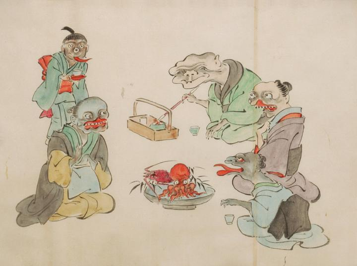

産見舞いに訪れた化物たち。右側には見舞いに訪れた3体の化物。奥には煙管を持った老人。中央には口蓋が割れた女の化物。手前には蜥蜴のような女の化物。見舞いの品である海老と蛸を挟んで老婆の化物が見舞いを受けている。奥からは三つ目の童子のような化物がお茶を運んでいる。
出典：親書誌：U426_nichibunken_0053：化物婚礼絵巻；バケモノコンレイエマキ／日付：2006／資源識別子：U426_nichibunken_0053_0019_0000
Copyright (c)2010- International Research Center for Japanese Studies, Kyoto, Japan. All rights reserved.